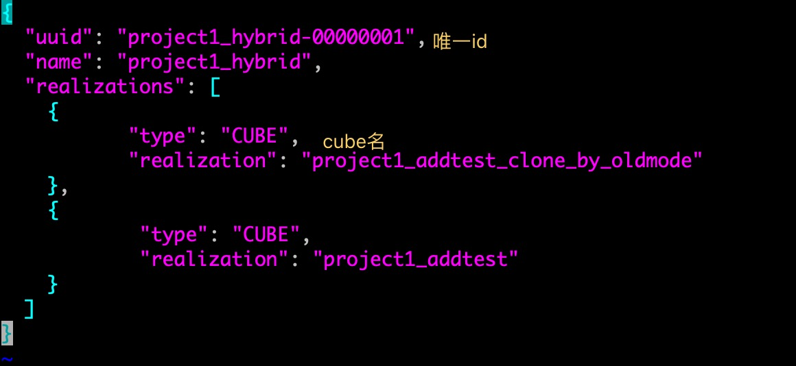
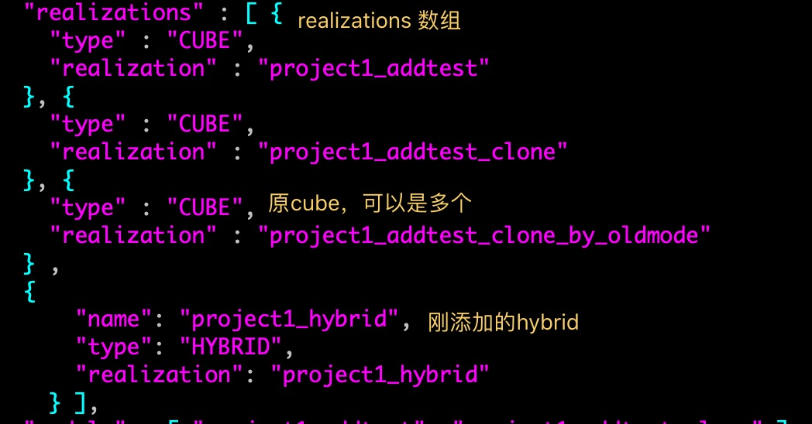
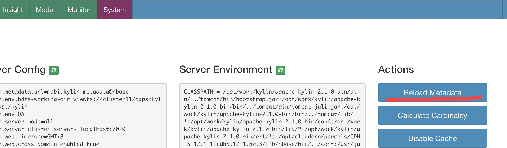
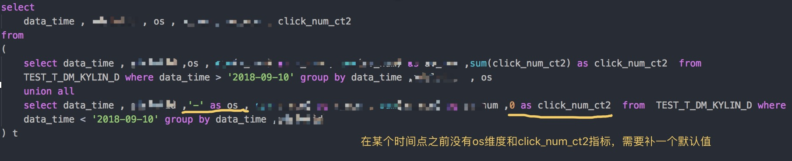
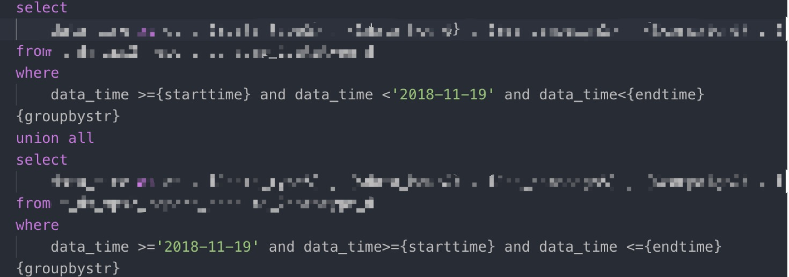

kylin有kylin的优点，同时它的缺点也比较明显
- 每个cube的数据是独立的，每次查询，只能从其中一个cube出结果(遵循最简原则，从满足查询条件的最简单cube出)。
- cube不能随时添加维度和指标。想添加维度指标有两个方案。
- 清空cube，然后修改增加维度指标，重算。
- copy一个cube，在新的cube里添加维度和指标。
对于这两个方案，方案一重复计算需要很多计算资源，并且新添加的维度和指标在历史时间中很可能没有意义。方案二，在分别查询添加维度指标这个时间点之前和之后的数据时，都没问题，一旦出现时间区间跨越两个cube，得到的结果一定是只有老/新cube的(因为缺点1，后续可以补充几个例子的图)；可以用union来解决，但是作为多个报表数据源的多维数据的cube，无法做到也没有办法修改每个查询任务，增加union逻辑，就此，kylin的混合模型hybrid诞生了(当然，这个混合模型诞生的原因我是乱说的，但是确实能解决跨cube查数据的问题)。
什么是混合模型hybrid
混合模型是kylin在1.0 版本提出的，把n个cube组合成一个虚拟的数据集，它本身不占存储空间，类似关系数据库中的视图，它接受查询，把查询分配给包含的cube，然后合并从结果获得的数据。
混合模型的创建与添加
混合模型的添加主要是元数据操作。暂时(20190620)不可页面上操作。
- 备份元数据
- 在元数据备份目录下创建子目录: hybrid
- 增加hybrid文件
在hybrid目录下创建唯一名的hybrid.json文件(一般用project名就可以)
修改其内容
 - 修改project文件
修改project目录下的json文件
增加内容
 元数据同步
1
./bin/metastore.sh restore $KYLIN_HOME/meta_backups/meta_2018_08_31_14_30_33
重启kylin或者页面操作更新元数据

混合模型的使用
由于混合模型对上层使用是透明的，所以在使用的时候和普通cube相同就可以了。
- 全新报表
在配置全新的报表的时候，就正常配置就可以了，原报表不会受到影响。 - 原报表增加维度。需要用到union。因为历史数据中是没有新加入的维度/指标，需要用空补位。

注意:Union的多个子查询，都需要添加starttime 和endtime 的宏，如下。如果不加的话，查询的时间区间会扩大。浪费资源以及给出的数据不符合自己想法

混合模型的缺点
- 添加维度指标带来的多个cube问题
对原报表无影响，对要修改的报表，使用union 来组合数据，如果主题更新频繁，报表的语句就会越来越复杂， - 解决方法
- 简单的方法，根据具体情况进行最新cube的回溯。比如一个月整理回溯一次。回溯的时候需要删除原cube对应日期的segment，否则会出现计算重复的情况。
- 复杂的方法，自己开发工具 旧cube的数据合并到新cube，这样也不用混合模型了。开发难度高。